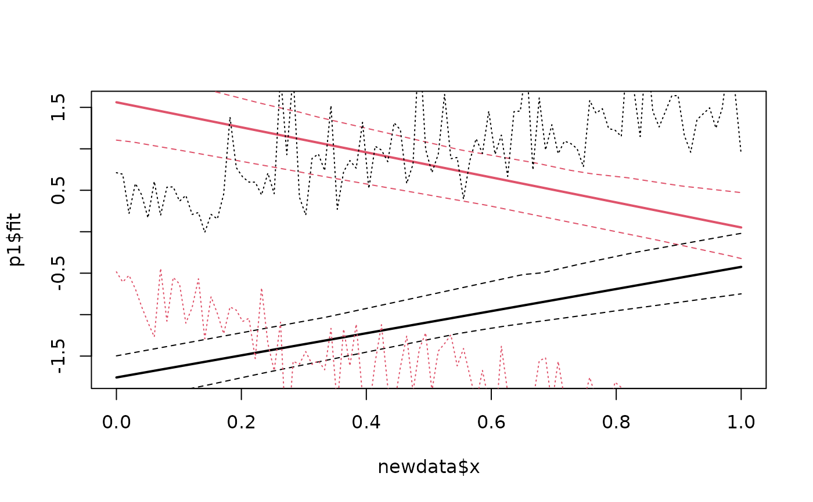
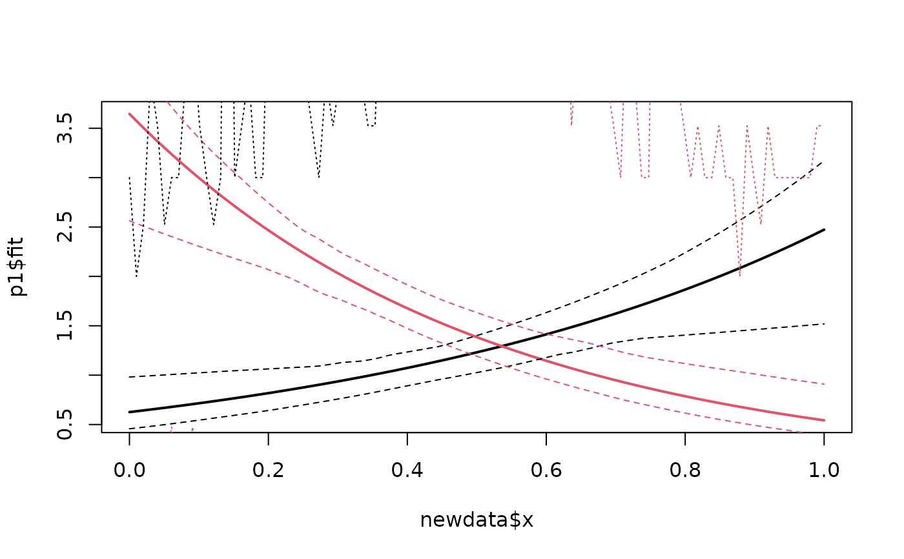

Predict Method for Class clustglmm
predict.clustglmm.RdPredicts the linear combinations of fixed and group part of the regression of clustGLMM output.
Transforms linear predictors to response level.
Explores the posterior predictive distribution of the response.
Usage
# S3 method for class 'clustglmm'
predict(object, newdata, y = names(object$family)[1],
type = c("link", "response", "posterior_predictive_response"),
method = c("samples", "plugin"),
what = c("fg", "f", "g"),
posterior_predictive_by_cluster=TRUE,
fun_posterior = mean, level = 0.95, interval = c("ET", "HPD"),
chain = 1, burnin = 0, thin = 1,
gs = object$clusters[[chain]], ...)Arguments
- object
an object of class
"clustglmm", an output ofclustGLMMfunction.- newdata
a
data.framecontaining all columns needed to construct model matrices.- y
a string; outcome to be predicted.
- type
what should be predicted; one of
"link"(default),"response"or"posterior_predictive_response", see Details below.- method
the method of predicting; one of
"samples"(default) or"plugin", see Details below.- what
more detailed clarification to the selected
type = "link".- posterior_predictive_by_cluster
should under the posterior predictive distribution for response be explored for each cluster separately?
- fun_posterior
a function summarizing samples into an estimator of location parameter of posterior distribution; e.g.
meanormedian.- level
the credibility level of credible intervals; 0.95 by default.
- interval
the method of constructing credible intervals; one of
"ET"(equal-tailed by default) or"HPD"(highest-posterior density), see Details below.- chain
chain number to be used to do the prediction, the default is the first
chain = 1.- burnin
the length of burn-in period (default 0), i.e., number of initial samples to ignore for inference.
- thin
thinning rate (default 1); only every
thinth value is used for inference (must be a positive integer).- gs
cluster labels, for which prediction of cluster-specific should be made; all non-empty clusters by default.
- ...
other arguments.
Details
Depending on type the following is computed:
- link
reconstructs the linear predictor for given outcome
y. You can specify bywhatwhich part of the predictor should be reconstructed: "f", "g", "fg", which part of the predictor should be reconstructed: the fixed part invariant to all clusters, the group-specific part for chosen clustersgsor sum of both (default).- response
linear predictor "fg" transformed depending on the outcome type. Not transformed for
num. Transformed byexpforpoi. Category probabilities forbin,ordandcat.- posterior_predictive_response
explores the posterior predictive distribution. Depending on
posterior_predictive_by_cluster, either for each cluster separately or you learn a mixture over given clustersgs. For each iteration inobject$draws[[chain]], samples latent parameters (allocation and random effects) and then an outcome value. It is important to know that only clusters ingsare considered here, other clusters are ignored.
Argument what only specifies option type="link":
- f
the fixed part of linear predictor invariant to all clusters,
- g
the group-specific part of linear predictor for chosen clusters
gs,- fg
sum of the two above.
As we approximate the posterior distribution with samples, there may be
several ways on obtaining the posterior estimate of desired quantity
(type). Depending on method we proceed in the following
way:
- samples
treat the desired quantity as a parametric function, evaluate it with all (closely specified) samples in
object$drawsand estimate it byfun_posterior. This option allows for construction of credible intervals.- plugin
estimate the model parameters with
fun_posteriorfirst and then plug them into the function defining the quantity. Does not provide credible intervals andtype="posterior_predictive_response".
The computation of credible intervals under method="samples" is given by interval:
- ET
equal-tailed credible interval determined out of samples from posterior distribution with
quantilefunction withprobs = c((1-level)/2, 1 - (1-level)/2.- HPD
highest-posterior density credible interval determined out of samples from posterior distribution with
hdifunction from HDInterval.
For method="plugin" the credible intervals are not implemented.
Value
For given outcome y returns a list with
- $fit
the estimate of the posterior location obtained via function
fun_posteriorover samples,- $lwr
the lower bound of credible interval, if
method="samples",- $upr
the upper bound of credible interval, if
method="samples".
Whenever a summarizing function (fun_posterior, mean or quantile) is called, all NA are omitted with na.rm = TRUE treatment.
For example, NA could appear in the post processed samples when no clear permutation is found.
Moreover, type="posterior_predictive_response" provides
- $samples
the non-aggregated samples of the response,
- $aux
the auxiliary quantities used to each generate outcome. Linear predictor for numeric, exponential of linear predictor for count, probabilities for binary, ordinal and categorical outcomes.
The output is an array of up to 4 dimensions (dropped if only size 1) in this exact order:
- 1.
the size of
newdata,- 2.
the number of clusters
length(gs), unless just 1 (then dropped) if not group-specific (what="f"),- 3.
the dimension of samples, if not reduced by
fun_posterior(only$samplesand$aux).- 4.
the number of different outcome levels: 1 for numeric and count (then dropped), K (probabilities) or K-1 (predictors) for categorical outcome of K levels
References
Vávra, J., Komárek, A., Grün, B., Malsiner-Walli, G. Clusterwise multivariate regression of mixed-type panel data. Stat Comput 34, 46 (2024). https://doi.org/10.1007/s11222-023-10304-5
Examples
### Get some longitudinal mixed type data
### here generated by generate_longitudinal_mixed_type_data()
data("longitudinal_mixed_type_data")
# Examples here demonstrate the basic use of the available functions on a toy dataset.
# For more thorough analyses see the vignettes.
###-----------------------------------------------------------------------------
### Prepare inputs for clustGLMM()
###-----------------------------------------------------------------------------
id <- "i"
family <- c("num", "poi", "bin", "ord", "cat")
names(family) <- Ys <- c("ynum", "ypoi", "ybin", "yord", "ycat")
## Create list of formulae for each outcome
formula <- list()
for(y in Ys){
formula[[y]] <- list()
formula[[y]]$fixed <- ~ f
formula[[y]]$group <- ~ x
formula[[y]]$random <- ~ 1
formula[[y]]$offset <- ""
}
formula
#> $ynum
#> $ynum$fixed
#> ~f
#> <environment: 0x64f207f44658>
#>
#> $ynum$group
#> ~x
#> <environment: 0x64f207f44658>
#>
#> $ynum$random
#> ~1
#> <environment: 0x64f207f44658>
#>
#> $ynum$offset
#> [1] ""
#>
#>
#> $ypoi
#> $ypoi$fixed
#> ~f
#> <environment: 0x64f207f44658>
#>
#> $ypoi$group
#> ~x
#> <environment: 0x64f207f44658>
#>
#> $ypoi$random
#> ~1
#> <environment: 0x64f207f44658>
#>
#> $ypoi$offset
#> [1] ""
#>
#>
#> $ybin
#> $ybin$fixed
#> ~f
#> <environment: 0x64f207f44658>
#>
#> $ybin$group
#> ~x
#> <environment: 0x64f207f44658>
#>
#> $ybin$random
#> ~1
#> <environment: 0x64f207f44658>
#>
#> $ybin$offset
#> [1] ""
#>
#>
#> $yord
#> $yord$fixed
#> ~f
#> <environment: 0x64f207f44658>
#>
#> $yord$group
#> ~x
#> <environment: 0x64f207f44658>
#>
#> $yord$random
#> ~1
#> <environment: 0x64f207f44658>
#>
#> $yord$offset
#> [1] ""
#>
#>
#> $ycat
#> $ycat$fixed
#> ~f
#> <environment: 0x64f207f44658>
#>
#> $ycat$group
#> ~x
#> <environment: 0x64f207f44658>
#>
#> $ycat$random
#> ~1
#> <environment: 0x64f207f44658>
#>
#> $ycat$offset
#> [1] ""
#>
#>
# intercept term will be group-specific
# since it appears in $group which has a preference over $fixed
## All other inputs need to be prepared,
## unless the default values are desired (varying, save, howsave, param, tuning).
## See the vignette for how these can be adjusted.
###-----------------------------------------------------------------------------
### Calling clustGLMM()
###-----------------------------------------------------------------------------
Gmax <- 5 # maximal number of mixture components to be considered
nchains <- 2 # number of chains to be sampled
## No inits specified
set.seed(123456789)
mcmc <- clustGLMM(formula = formula, id = id, family = family,
data = longitudinal_mixed_type_data,
G = Gmax, iter = 100, nchains = nchains)
#> Inits are missing, calculating...
#> Inits are ready.
#> Settings ready, about to start for ch in 1:nchains.
#> Inits for chain 1 are ready.
#> Triggering C function.
#>
#> Chain: 1, (1 %)
Chain: 1, (2 %)
Chain: 1, (3 %)
Chain: 1, (4 %)
Chain: 1, (5 %)
Chain: 1, (6 %)
Chain: 1, (7 %)
Chain: 1, (8 %)
Chain: 1, (9 %)
Chain: 1, (10 %)
Chain: 1, (11 %)
Chain: 1, (12 %)
Chain: 1, (13 %)
Chain: 1, (14 %)
Chain: 1, (15 %)
Chain: 1, (16 %)
Chain: 1, (17 %)
Chain: 1, (18 %)
Chain: 1, (19 %)
Chain: 1, (20 %)
Chain: 1, (21 %)
Chain: 1, (22 %)
Chain: 1, (23 %)
Chain: 1, (24 %)
Chain: 1, (25 %)
Chain: 1, (26 %)
Chain: 1, (27 %)
Chain: 1, (28 %)
Chain: 1, (29 %)
Chain: 1, (30 %)
Chain: 1, (31 %)
Chain: 1, (32 %)
Chain: 1, (33 %)
Chain: 1, (34 %)
Chain: 1, (35 %)
Chain: 1, (36 %)
Chain: 1, (37 %)
Chain: 1, (38 %)
Chain: 1, (39 %)
Chain: 1, (40 %)
Chain: 1, (41 %)
Chain: 1, (42 %)
Chain: 1, (43 %)
Chain: 1, (44 %)
Chain: 1, (45 %)
Chain: 1, (46 %)
Chain: 1, (47 %)
Chain: 1, (48 %)
Chain: 1, (49 %)
Chain: 1, (50 %)
Chain: 1, (51 %)
Chain: 1, (52 %)
Chain: 1, (53 %)
Chain: 1, (54 %)
Chain: 1, (55 %)
Chain: 1, (56 %)
Chain: 1, (57 %)
Chain: 1, (58 %)
Chain: 1, (59 %)
Chain: 1, (60 %)
Chain: 1, (61 %)
Chain: 1, (62 %)
Chain: 1, (63 %)
Chain: 1, (64 %)
Chain: 1, (65 %)
Chain: 1, (66 %)
Chain: 1, (67 %)
Chain: 1, (68 %)
Chain: 1, (69 %)
Chain: 1, (70 %)
Chain: 1, (71 %)
Chain: 1, (72 %)
Chain: 1, (73 %)
Chain: 1, (74 %)
Chain: 1, (75 %)
Chain: 1, (76 %)
Chain: 1, (77 %)
Chain: 1, (78 %)
Chain: 1, (79 %)
Chain: 1, (80 %)
Chain: 1, (81 %)
Chain: 1, (82 %)
Chain: 1, (83 %)
Chain: 1, (84 %)
Chain: 1, (85 %)
Chain: 1, (86 %)
Chain: 1, (87 %)
Chain: 1, (88 %)
Chain: 1, (89 %)
Chain: 1, (90 %)
Chain: 1, (91 %)
Chain: 1, (92 %)
Chain: 1, (93 %)
Chain: 1, (94 %)
Chain: 1, (95 %)
Chain: 1, (96 %)
Chain: 1, (97 %)
Chain: 1, (98 %)
Chain: 1, (99 %)
Chain: 1, (100 %)
#> Sampling of chain 1 is completed.
#> Saving the last state of chain 1 is completed.
#> Saving chain 1 is completed.
#> Inits for chain 2 are ready.
#> Triggering C function.
#>
#> Chain: 2, (1 %)
Chain: 2, (2 %)
Chain: 2, (3 %)
Chain: 2, (4 %)
Chain: 2, (5 %)
Chain: 2, (6 %)
Chain: 2, (7 %)
Chain: 2, (8 %)
Chain: 2, (9 %)
Chain: 2, (10 %)
Chain: 2, (11 %)
Chain: 2, (12 %)
Chain: 2, (13 %)
Chain: 2, (14 %)
Chain: 2, (15 %)
Chain: 2, (16 %)
Chain: 2, (17 %)
Chain: 2, (18 %)
Chain: 2, (19 %)
Chain: 2, (20 %)
Chain: 2, (21 %)
Chain: 2, (22 %)
Chain: 2, (23 %)
Chain: 2, (24 %)
Chain: 2, (25 %)
Chain: 2, (26 %)
Chain: 2, (27 %)
Chain: 2, (28 %)
Chain: 2, (29 %)
Chain: 2, (30 %)
Chain: 2, (31 %)
Chain: 2, (32 %)
Chain: 2, (33 %)
Chain: 2, (34 %)
Chain: 2, (35 %)
Chain: 2, (36 %)
Chain: 2, (37 %)
Chain: 2, (38 %)
Chain: 2, (39 %)
Chain: 2, (40 %)
Chain: 2, (41 %)
Chain: 2, (42 %)
Chain: 2, (43 %)
Chain: 2, (44 %)
Chain: 2, (45 %)
Chain: 2, (46 %)
Chain: 2, (47 %)
Chain: 2, (48 %)
Chain: 2, (49 %)
Chain: 2, (50 %)
Chain: 2, (51 %)
Chain: 2, (52 %)
Chain: 2, (53 %)
Chain: 2, (54 %)
Chain: 2, (55 %)
Chain: 2, (56 %)
Chain: 2, (57 %)
Chain: 2, (58 %)
Chain: 2, (59 %)
Chain: 2, (60 %)
Chain: 2, (61 %)
Chain: 2, (62 %)
Chain: 2, (63 %)
Chain: 2, (64 %)
Chain: 2, (65 %)
Chain: 2, (66 %)
Chain: 2, (67 %)
Chain: 2, (68 %)
Chain: 2, (69 %)
Chain: 2, (70 %)
Chain: 2, (71 %)
Chain: 2, (72 %)
Chain: 2, (73 %)
Chain: 2, (74 %)
Chain: 2, (75 %)
Chain: 2, (76 %)
Chain: 2, (77 %)
Chain: 2, (78 %)
Chain: 2, (79 %)
Chain: 2, (80 %)
Chain: 2, (81 %)
Chain: 2, (82 %)
Chain: 2, (83 %)
Chain: 2, (84 %)
Chain: 2, (85 %)
Chain: 2, (86 %)
Chain: 2, (87 %)
Chain: 2, (88 %)
Chain: 2, (89 %)
Chain: 2, (90 %)
Chain: 2, (91 %)
Chain: 2, (92 %)
Chain: 2, (93 %)
Chain: 2, (94 %)
Chain: 2, (95 %)
Chain: 2, (96 %)
Chain: 2, (97 %)
Chain: 2, (98 %)
Chain: 2, (99 %)
Chain: 2, (100 %)
#> Sampling of chain 2 is completed.
#> Saving the last state of chain 2 is completed.
#> Saving chain 2 is completed.
#> All chains have been sampled.
###-----------------------------------------------------------------------------
### predict.clustglmm()
###-----------------------------------------------------------------------------
# By default, predicts the first outcome in mcmc$family
predict(mcmc, newdata = subset(longitudinal_mixed_type_data, i %in% 1:3), type = "link")
#> $fit
#> (2) (3)
#> 1 -1.5804851 1.36056048
#> 2 -1.3101773 1.05455346
#> 3 -1.1042798 0.82146343
#> 4 -0.4906018 0.12673800
#> 5 -1.4524709 1.19674451
#> 6 -0.9903620 0.67360572
#> 7 -0.5824010 0.21176593
#> 8 -0.4769270 0.09236208
#> 9 -1.4512012 1.21420219
#> 10 -1.4400877 1.20162099
#> 11 -1.1412995 0.86337226
#> 12 -0.5302393 0.17161031
#>
#> $lwr
#> (2) (3)
#> 1 -1.8692353 0.9409536
#> 2 -1.5507286 0.6617149
#> 3 -1.3149705 0.4559395
#> 4 -0.8004162 -0.2388236
#> 5 -1.6873658 0.8826113
#> 6 -1.1707565 0.4499279
#> 7 -0.8151808 -0.1613316
#> 8 -0.7284073 -0.3339214
#> 9 -1.7130008 0.8081866
#> 10 -1.6997638 0.7967738
#> 11 -1.3571121 0.4929372
#> 12 -0.8309305 -0.1904181
#>
#> $upr
#> (2) (3)
#> 1 -1.31218308 1.7367330
#> 2 -1.03028186 1.3601595
#> 3 -0.77862735 1.0918681
#> 4 -0.08619877 0.5136744
#> 5 -1.19651339 1.4889447
#> 6 -0.70805416 0.9413649
#> 7 -0.24239709 0.5519574
#> 8 -0.12200632 0.4761890
#> 9 -1.17735421 1.5510330
#> 10 -1.16576410 1.5361045
#> 11 -0.82389668 1.1400341
#> 12 -0.12696249 0.5382600
#>
# result is list of fit, lwr, upr matrices
# Predict the evolution in time for covariate f=0
newdata <- data.frame("x" = seq(0, 1, length.out=100), "f"=factor(0, levels=c(0,1)))
## Numeric outcome
# both fixed and group-specific part of the predictor
p1 <- predict(mcmc, newdata, y="ynum", type="link", what="fg")
# posterior predictive distribution of the response
p2 <- predict(mcmc, newdata, y="ynum", type="posterior_predictive_response")
matplot(newdata$x, p1$fit, type = "l", lty = 1, lwd = 2)
matplot(newdata$x, p1$lwr, type = "l", lty = 2, add = TRUE)
matplot(newdata$x, p1$upr, type = "l", lty = 2, add = TRUE)
matplot(newdata$x, p2$lwr, type = "l", lty = 3, add = TRUE) # needs longer chains
matplot(newdata$x, p2$upr, type = "l", lty = 3, add = TRUE) # needs longer chains

## Count outcome - conditional mean
# predictor
pl <- predict(mcmc, newdata, y="ypoi", type="link")
# conditional mean
p1 <- predict(mcmc, newdata, y="ypoi", type="response")
# posterior predictive distribution
p2 <- predict(mcmc, newdata, y="ypoi", type="posterior_predictive_response")
matplot(newdata$x, p1$fit, type = "l", lty = 1, lwd = 2)
matplot(newdata$x, p1$lwr, type = "l", lty = 2, add = TRUE)
matplot(newdata$x, p1$upr, type = "l", lty = 2, add = TRUE)
matplot(newdata$x, p2$lwr, type = "l", lty = 3, add = TRUE) # needs longer chains
matplot(newdata$x, p2$upr, type = "l", lty = 3, add = TRUE) # needs longer chains

## Categorical outcome - list of fit, lwr, upr 3D arrays (category dimension added)
predict(mcmc, newdata[1:5,], y="ycat", type="link", what="fg")
#> $fit
#> , , k=1
#>
#> (2) (3)
#> 1 0.001923336 -1.298792
#> 2 0.004503958 -1.279346
#> 3 0.007084580 -1.259899
#> 4 0.009665203 -1.240452
#> 5 0.012245825 -1.221005
#>
#> , , k=2
#>
#> (2) (3)
#> 1 0.1584548 -0.9760891
#> 2 0.1617932 -0.9786448
#> 3 0.1651316 -0.9812005
#> 4 0.1684701 -0.9837562
#> 5 0.1718085 -0.9863118
#>
#> , , k=3
#>
#> (2) (3)
#> 1 -0.06666464 0.1972597
#> 2 -0.05852600 0.1909867
#> 3 -0.05038737 0.1847137
#> 4 -0.04224874 0.1784407
#> 5 -0.03411011 0.1721677
#>
#>
#> $lwr
#> , , k=1
#>
#> (2) (3)
#> 1 -0.7089034 -2.102995
#> 2 -0.6975979 -2.072510
#> 3 -0.6851574 -2.042026
#> 4 -0.6727169 -2.011541
#> 5 -0.6602763 -1.981057
#>
#> , , k=2
#>
#> (2) (3)
#> 1 -0.9170859 -2.746372
#> 2 -0.9037124 -2.732300
#> 3 -0.8903390 -2.718229
#> 4 -0.8769655 -2.704158
#> 5 -0.8635921 -2.690087
#>
#> , , k=3
#>
#> (2) (3)
#> 1 -1.197782 -0.7126776
#> 2 -1.178379 -0.7059088
#> 3 -1.158975 -0.6991400
#> 4 -1.139572 -0.6923712
#> 5 -1.120168 -0.6854130
#>
#>
#> $upr
#> , , k=1
#>
#> (2) (3)
#> 1 0.8763133 -0.3868920
#> 2 0.8673557 -0.3741296
#> 3 0.8583982 -0.3613671
#> 4 0.8494406 -0.3486047
#> 5 0.8404831 -0.3358422
#>
#> , , k=2
#>
#> (2) (3)
#> 1 1.097785 0.7266000
#> 2 1.090320 0.6958410
#> 3 1.082855 0.6650820
#> 4 1.075390 0.6343230
#> 5 1.067926 0.6035639
#>
#> , , k=3
#>
#> (2) (3)
#> 1 1.364127 1.376566
#> 2 1.353599 1.357549
#> 3 1.343071 1.338533
#> 4 1.332543 1.319516
#> 5 1.322015 1.300499
#>
#>